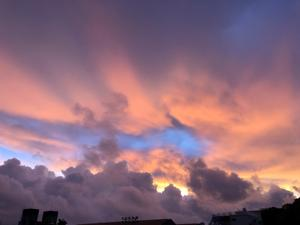

うるがいの話 ある日
最新: 『ちむどんどん』【うるがいの話 ある日】とは 一日だけのプログです
『うるがいの話』の最新一日だけのプログで、通信料が少なく経済的だ。カニの画像をクリックすると全ての日付が載る『うるがいの話』サイトを表示します
|
|
【うるがいの話】 うるがい(ｳﾙｶﾞｲ urugai)とは、『もずくがに』の名前でとても大きくなります。 |
|---|---|
|
|
【カミマヤーの話】 猫のことを方言でマヤーといいます。カミマヤー（kamimayaa）とは、神の猫のことです。 |
|
【たながぁの音楽】 たながぁ（ﾀﾅｶﾞｰ tanagaa）とは手長えびのことで、何種類かあり大きいのは車 エビぐらいになります。 |

|
【ぶながぁの話】 ぶながぁ(ﾌﾞﾅｶﾞｰ bunagaa)とは、赤い髪の毛、赤い身体、そして身長は１ｍ２０ｃｍ ぐらい、川の蟹を食べているの目撃された。場所は沖縄県国頭郡大宜味村のと ある村僕の隣近所に住んでいる爺さんから、聞いた話です。 |
|
|
【ギーマの話】 ギーマ(giima)とは、山原の里山に咲くスズランに似た、 花を付けます。実は食べられます、 気が付くと口の周りが紫になっています。 |
2022年09月12日 (月）『ちむどんどん』
15:55

作家の林真理子さんも『週刊文春』９月８日号のコラムでこう書いていた。
「もはや『ちむどんどん』がまきちらすイライラは、国民的レベルになってい
るようだ」「私は長年朝ドラを見続けてきたが、こんなのは初めて。わざと視
聴者をイラつかせようとしているとしか思えない」
まさしく、その通りである。確かに毎回、イライラする。もしかして、計算済
みで最終回までには収まるところに収めるのか、と思う。今日は豚肉の話があ
った。実家では豚を密殺をしていたが、時々保健所から営業停止措置の命令を
受けた。そして、暫くは名護にあると屠殺場へ豚を持ち込み、処置をした肉を
取った。そのままでは、美味しくないのでバーナーで皮や、足、頭を密殺同様
焼き、かねたわしで洗い（私もその仕事をさせられた）売っていた。
私の同級生のお兄さんで、姉の同級生（かつ、妹の同級生のお兄さん）が大宜
味村の村長になった。新聞の写真をみるとかなり老けている、姉も生きていた
ら村長同様老けていたのだろう。
１５時４８分 ビットコインの総資産 ￥９、０５５↑